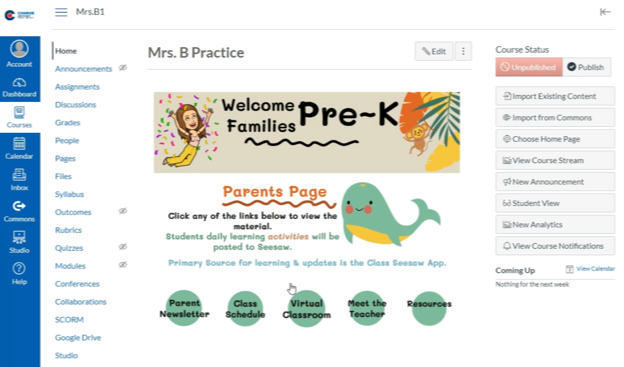

Designing the Canvas Home Page with Buttons
In this recording, I demonstrate how I created a Canvas landing page with navigation buttons for students and families.

Instructional Design | Canvas Course Development | Educator Training
A thoughtful online course helps learners understand where to begin, how to find resources, and what to do next. This collection features video demonstrations of how I created instructional pages in Canvas LMS, making my course-building process visible and explaining it for other educators.
As a teacher, I built Canvas courses for mathematics, science, and social studies. I also developed an onboarding course for new families to complete as they learned to navigate Canvas. These experiences involved creating learning resources for different audiences, from students working through subject content to families becoming familiar with an online learning environment.
These recordings highlight my early experience creating Canvas pages while teaching Pre-K. They show how I built resources to support younger learners and their families and explained my page-building process to fellow educators.
During the pandemic, fellow teachers asked how to create similar Canvas pages after seeing how my layout simplified access to learning materials for students and families. I recorded these walkthroughs to share the process and help colleagues adapt the design for their own classrooms.
This screenshot shows the landing page I created for my Pre-K classroom. In Canvas, the navigation buttons linked directly to learning materials, helping students and families find what they needed.

My Pre-K Online and Hybrid Expectations project provides another example of instructional resources I published within Canvas. The presentations communicate learning expectations for an online and hybrid classroom environment.